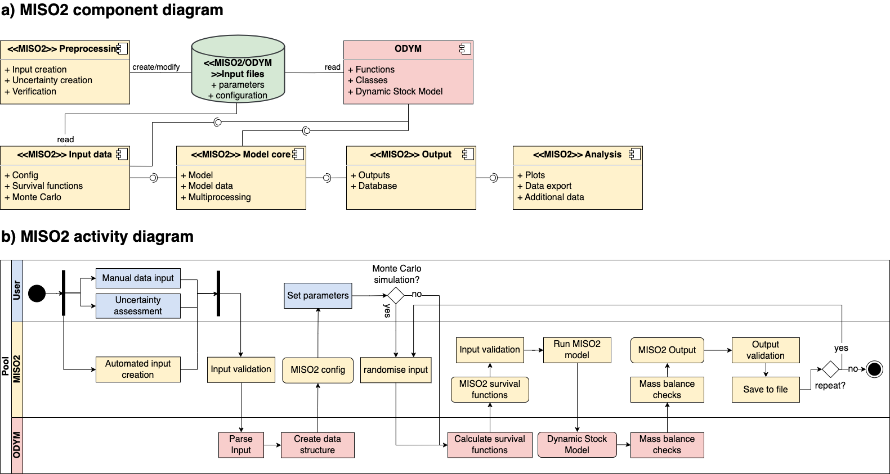

Software Architecture
This repository contains the majority of the MISO2 components, most importantly the core functionality necessary to recreate our results. Some components and functionality were omitted from publication, since it was not deemed relevant or well documented enough for publication.
{kind=link}
Component diagram
The MISO2 software architecture consists of the following main components:
MISO2 Preprocessing:
Responsible for creating inputs, assessing uncertainties, and verifying data. This component ensures that the necessary input files and configurations are prepared for the model.
MISO2/ODYM Input Files:
Set of XLSX files that constitute input data.
ODYM:
ODYM provides core functionalities of the MISO2 software, including input parsing, the dynamic stock model and essential functions and classes.
MISO2 Input Data:
Contains configuration data, survival functions, and inputs for Monte Carlo simulations. Combined with ODYM it reads the preprocessed input files to set up the model run.
MISO2 Model Core:
The central component that executes the main modeling tasks. Subcomponents introduce multiprocessing, which is necessary due to memory constraints when working with the global data.
MISO2 Output:
Generates model outputs, stores results in a database, and facilitates the export of data for further analysis. These are mostly wrappers for Pandas Dataframes that add convenience functionality.
MISO2 Analysis:
Analysis components are not included in this repository.
Activity diagram
These components are divided into subcomponents. Please take a look at the API Reference and the source code for detailed documentation of the functionality.
The activity diagram illustrates the workflow of the MISO2 model, starting from user input and uncertainty assessment to automated input creation, model configuration, and execution. It includes validation steps, Monte Carlo simulations, output generation, and mass balance checks, ensuring the integrity and accuracy of the model’s results.